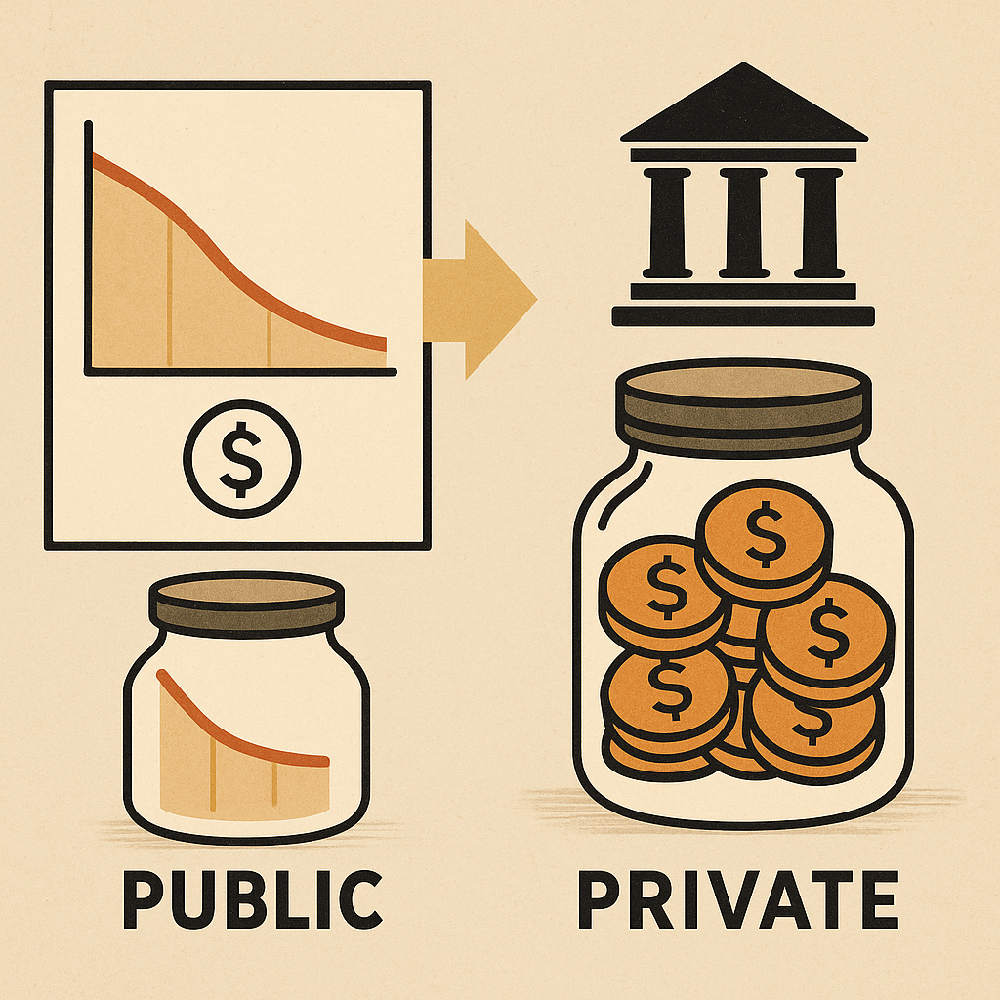

سعر الصرف الحقيقي والادخار العام والخاص

العلاقة بين السعر الحقيقي للعملة وسلوك الادخار في الاقتصاد
ما هو سعر الصرف الحقيقي؟
سعر الصرف الحقيقي يُقاس من خلال مقارنة القدرة الشرائية للعملة المحلية
مقابل العملات الأجنبية بعد احتساب تأثير الفروقات في الأسعار.
بمعنى آخر، هو السعر الذي يعكس القوة الشرائية الفعلية وليس فقط السعر
الاسمي في السوق. هذا السعر يعتبر مؤشرًا مهمًا لتحديد مدى تنافسية
الاقتصاد محليًا ودوليًا، وله تأثير مباشر على الاستيراد والتصدير،
وبالتالي على توازن الاقتصاد الكلي.
الادخار العام: دوره وتأثره بسعر الصرف
الادخار العام يُقصد به الفائض المالي الذي تحققه الحكومة نتيجة الفرق
بين الإيرادات العامة والنفقات. عندما يكون سعر الصرف الحقيقي مستقرًا أو
محسوبًا بشكل عادل، تستطيع الحكومة التخطيط المالي بشكل أكثر دقة، ما
ينعكس على قدرة الدولة على تحقيق فوائض مالية وادخارها في صناديق سيادية
أو استثمارها في مشاريع طويلة الأجل.
أما في حالة انخفاض سعر الصرف الحقيقي، قد تضطر الحكومات إلى زيادة
الإنفاق لدعم الاستيراد أو تقديم دعم مالي، مما يقلل من قدرتها على
الادخار.
الادخار الخاص: استجابة الأفراد والمؤسسات لتغيرات السعر
الادخار الخاص يشمل مدخرات الأفراد والشركات. يتأثر هذا النوع من الادخار
بشكل واضح بتغيرات سعر الصرف الحقيقي. فكلما انخفضت قيمة العملة
الحقيقية، انخفضت الحوافز الادخارية، خاصة إذا شعر الأفراد أن مدخراتهم
ستفقد قيمتها في المستقبل.
بالمقابل، إذا كان سعر الصرف الحقيقي مستقرًا أو في تحسن، فإن ذلك يعزز
ثقة الأفراد في العملة المحلية ويشجعهم على الادخار داخل الجهاز المصرفي،
مما يزيد من السيولة ويقوي الاقتصاد .
التوازن بين السياسة النقدية وسلوك الادخار
الحفاظ على سعر صرف حقيقي متوازن يُعتبر من أهم أدوات السياسة الاقتصادية
التي تساعد على رفع معدل الادخار العام والخاص معًا.
من خلال استقرار القوة الشرائية للعملة، يمكن تحفيز كل من الحكومة
والمواطنين على التوفير والاستثمار، وهو ما يدعم النمو الاقتصادي
على المدى الطويل.